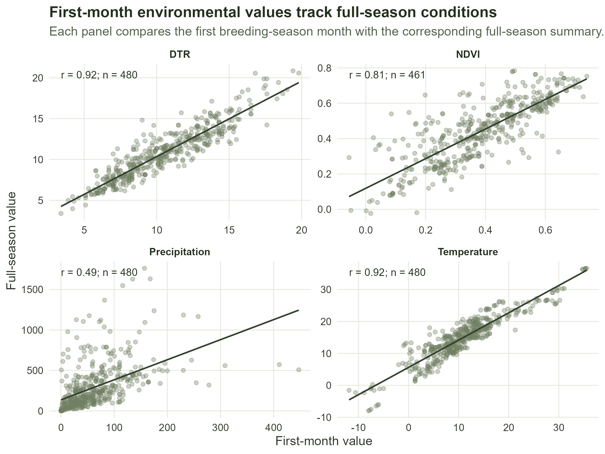
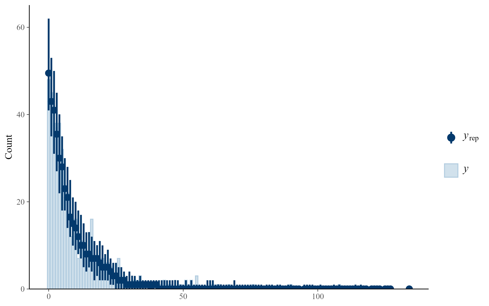
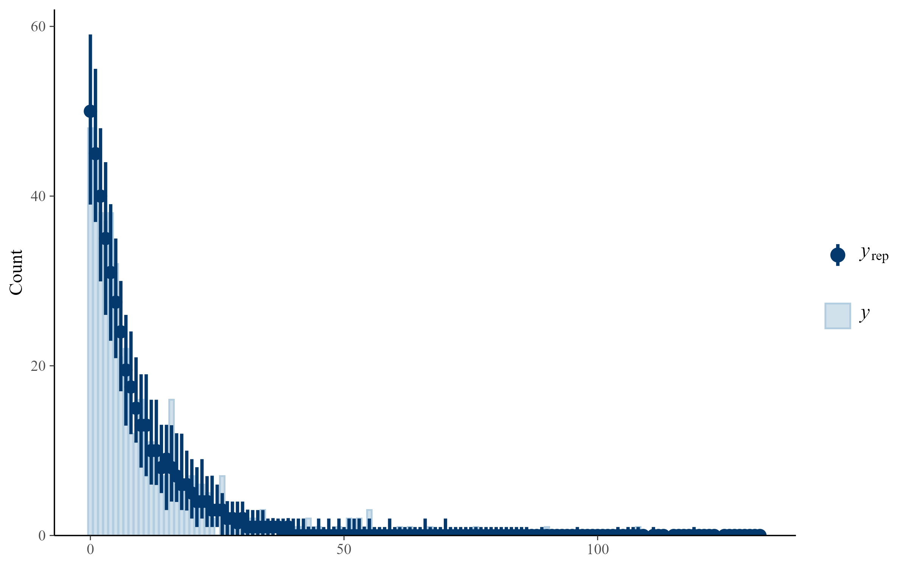
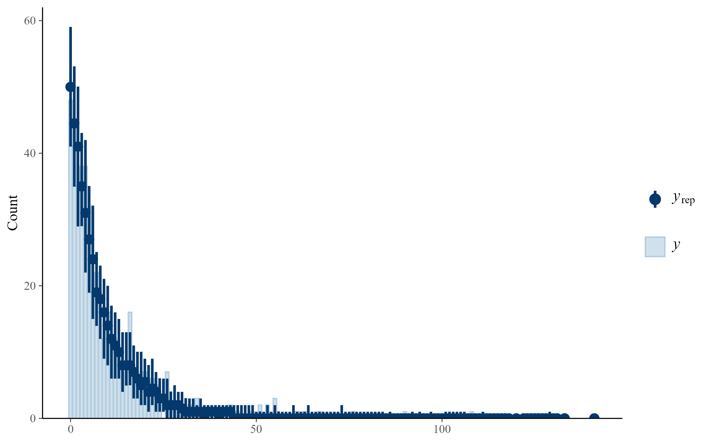
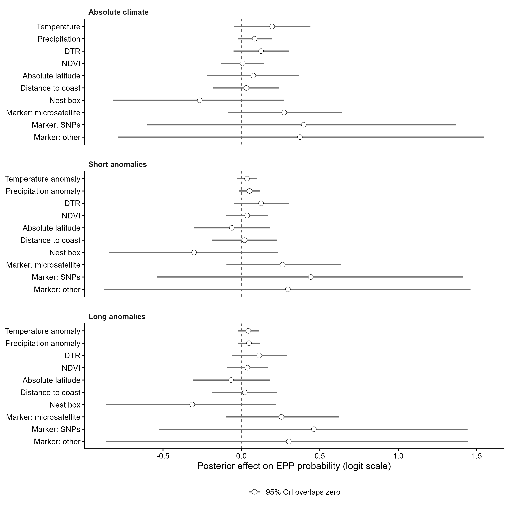

Show code
library(brms)
library(dplyr)
library(performance)
library(knitr)library(brms)
library(dplyr)
library(performance)
library(knitr)The aim of this analysis is to test whether variation in extra-pair paternity (EPP) is associated with environmental conditions experienced during the breeding season.
To evaluate different environmental hypotheses, three Bayesian phylogenetic beta-binomial models were fitted:
All models additionally include a common set of geographic and methodological moderators:
These variables were included to account for broad geographic gradients and methodological differences among studies that may influence estimates of EPP.
All models further account for population-level variation, species identity, and phylogenetic relatedness among species through random effects.
Together, these models allow us to distinguish whether EPP is more strongly associated with absolute environmental conditions, short-term environmental fluctuations, or departures from long-term climatic expectations.
All continuous predictors are standardised to mean 0 and standard deviation 1. Absolute precipitation is log-transformed as log(x + 1) before standardisation to reduce skewness.
For each record (i):
\[y_i \sim \mathrm{BetaBinomial}(N_i, p_i, \phi)\]
where (y_i) is the number of broods with EPP and (N_i) is the total number of sampled broods.
The linear predictor is:
\[\mathrm{logit}(p_i) = \alpha + \beta X_i + u_{\mathrm{population}[i]} + u_{\mathrm{species}[i]} + u_{\mathrm{phylo}[i]}\]
where (u_{}) is a population-level random intercept, (u_{}) is a non-phylogenetic species-level random intercept, and (u_{}) is a phylogenetic random effect based on the Clements tree.
dat_model_phylo <- readRDS("data/processed/dat_model_phylo.rds")
phylo_mat <- readRDS("data/processed/phylo_mat.rds")z <- function(x) {
as.numeric(scale(x))
}
complete_model_data <- function(data, vars) {
data <- data[
!is.na(data$n_epp_broods) &
!is.na(data$n_broods_sampled) &
data$n_broods_sampled > 0 &
data$n_epp_broods <= data$n_broods_sampled,
]
data <- data[complete.cases(data[, vars]), ]
droplevels(data)
}
dat_env <- dat_model_phylo
dat_env$nest_box <- as.factor(dat_env$nest_box)
dat_env$marker_type <- as.factor(dat_env$marker_type)
dat_env$population_id <- as.factor(dat_env$population_id)
dat_env$species_nonphylo <- as.factor(dat_env$species_nonphylo)
dat_env$species_phylo <- as.factor(dat_env$species_phylo)
dat_env$abs_latitude_z <- z(dat_env$abs_latitude)
dat_env$distance_to_coast_z <- z(dat_env$distance_to_coast_km)
dat_env$tmp_cru_C_first_month_z <- z(dat_env$tmp_cru_C_first_month)
dat_env$pre_cru_mm_first_month_log_z <- z(log1p(dat_env$pre_cru_mm_first_month))
dat_env$dtr_cru_C_first_month_z <- z(dat_env$dtr_cru_C_first_month)
dat_env$ndvi_first_month_median_30km_z <- z(dat_env$ndvi_first_month_median_30km)
dat_env$tmp_short_anom_5yr_C_first_month_z <- z(dat_env$tmp_short_anom_5yr_C_first_month)
dat_env$pre_short_anom_5yr_mm_first_month_z <- z(dat_env$pre_short_anom_5yr_mm_first_month)
dat_env$tmp_long_anom_1961_1989_C_first_month_z <- z(dat_env$tmp_long_anom_1961_1989_C_first_month)
dat_env$pre_long_anom_1961_1989_mm_first_month_z <- z(dat_env$pre_long_anom_1961_1989_mm_first_month)common_vars <- c(
"n_epp_broods",
"n_broods_sampled",
"abs_latitude_z",
"distance_to_coast_z",
"nest_box",
"marker_type",
"population_id",
"species_nonphylo",
"species_phylo"
)
absolute_vars <- c(
common_vars,
"tmp_cru_C_first_month_z",
"pre_cru_mm_first_month_log_z",
"dtr_cru_C_first_month_z",
"ndvi_first_month_median_30km_z"
)
short_vars <- c(
common_vars,
"tmp_short_anom_5yr_C_first_month_z",
"pre_short_anom_5yr_mm_first_month_z",
"dtr_cru_C_first_month_z",
"ndvi_first_month_median_30km_z"
)
long_vars <- c(
common_vars,
"tmp_long_anom_1961_1989_C_first_month_z",
"pre_long_anom_1961_1989_mm_first_month_z",
"dtr_cru_C_first_month_z",
"ndvi_first_month_median_30km_z"
)
dat_env_absolute <- complete_model_data(dat_env, absolute_vars)
dat_env_short <- complete_model_data(dat_env, short_vars)
dat_env_long <- complete_model_data(dat_env, long_vars)
model_data_checks <- data.frame(
model = c(
"absolute climate",
"short anomalies",
"long anomalies"
),
records = c(
nrow(dat_env_absolute),
nrow(dat_env_short),
nrow(dat_env_long)
),
species = c(
length(unique(dat_env_absolute$species_phylo)),
length(unique(dat_env_short$species_phylo)),
length(unique(dat_env_long$species_phylo))
),
populations = c(
length(unique(dat_env_absolute$population_id)),
length(unique(dat_env_short$population_id)),
length(unique(dat_env_long$population_id))
)
)
kable(model_data_checks)| model | records | species | populations |
|---|---|---|---|
| absolute climate | 457 | 111 | 175 |
| short anomalies | 457 | 111 | 175 |
| long anomalies | 457 | 111 | 175 |
Because the main models use first-month environmental predictors, we checked whether first-month values were correlated with corresponding full-season summaries.
first_full_cor <- function(data, first_var, full_var, label) {
keep <- complete.cases(data[, c(first_var, full_var)])
test <- cor.test(
data[[first_var]][keep],
data[[full_var]][keep],
method = "pearson"
)
data.frame(
variable = label,
n = sum(keep),
r = unname(test$estimate),
p_value = test$p.value
)
}
first_full_correlations <- bind_rows(
first_full_cor(
dat_env,
"tmp_cru_C_first_month",
"tmp_cru_C_full_season",
"Temperature"
),
first_full_cor(
dat_env,
"pre_cru_mm_first_month",
"pre_cru_mm_full_season",
"Precipitation"
),
first_full_cor(
dat_env,
"dtr_cru_C_first_month",
"dtr_cru_C_full_season",
"DTR"
),
first_full_cor(
dat_env,
"ndvi_first_month_median_30km",
"ndvi_full_season_median_30km",
"NDVI"
)
)
kable(first_full_correlations, digits = 3)| variable | n | r | p_value |
|---|---|---|---|
| Temperature | 480 | 0.922 | 0 |
| Precipitation | 480 | 0.489 | 0 |
| DTR | 480 | 0.920 | 0 |
| NDVI | 461 | 0.808 | 0 |
knitr::include_graphics(
"figures/first_month_full_season_correlations.png"
)
The following linear models are used only to check collinearity among fixed predictors before fitting the Bayesian beta-binomial models.
lm_env_absolute <- lm(
I(n_epp_broods / n_broods_sampled) ~
abs_latitude_z +
distance_to_coast_z +
nest_box +
marker_type +
tmp_cru_C_first_month_z +
pre_cru_mm_first_month_log_z +
dtr_cru_C_first_month_z +
ndvi_first_month_median_30km_z,
data = dat_env_absolute
)
check_collinearity(lm_env_absolute)| Term | VIF | VIF_CI_low | VIF_CI_high | SE_factor | Tolerance | Tolerance_CI_low | Tolerance_CI_high |
|---|---|---|---|---|---|---|---|
| abs_latitude_z | 2.715939 | 2.363608 | 3.159306 | 1.648011 | 0.3681968 | 0.3165252 | 0.4230820 |
| distance_to_coast_z | 1.346703 | 1.224492 | 1.535444 | 1.160475 | 0.7425544 | 0.6512775 | 0.8166652 |
| nest_box | 1.137387 | 1.060168 | 1.313708 | 1.066483 | 0.8792084 | 0.7612043 | 0.9432469 |
| marker_type | 1.416784 | 1.281772 | 1.616489 | 1.059784 | 0.7058237 | 0.6186248 | 0.7801701 |
| tmp_cru_C_first_month_z | 2.569493 | 2.241211 | 2.984601 | 1.602964 | 0.3891818 | 0.3350532 | 0.4461873 |
| pre_cru_mm_first_month_log_z | 1.379848 | 1.251524 | 1.573641 | 1.174669 | 0.7247173 | 0.6354689 | 0.7990256 |
| dtr_cru_C_first_month_z | 1.885580 | 1.670345 | 2.169923 | 1.373164 | 0.5303408 | 0.4608458 | 0.5986787 |
| ndvi_first_month_median_30km_z | 1.321263 | 1.203835 | 1.506342 | 1.149462 | 0.7568513 | 0.6638596 | 0.8306787 |
lm_env_short <- lm(
I(n_epp_broods / n_broods_sampled) ~
abs_latitude_z +
distance_to_coast_z +
nest_box +
marker_type +
tmp_short_anom_5yr_C_first_month_z +
pre_short_anom_5yr_mm_first_month_z +
dtr_cru_C_first_month_z +
ndvi_first_month_median_30km_z,
data = dat_env_short
)
check_collinearity(lm_env_short)| Term | VIF | VIF_CI_low | VIF_CI_high | SE_factor | Tolerance | Tolerance_CI_low | Tolerance_CI_high |
|---|---|---|---|---|---|---|---|
| abs_latitude_z | 1.543657 | 1.386322 | 1.765068 | 1.242440 | 0.6478122 | 0.5665503 | 0.7213329 |
| distance_to_coast_z | 1.339982 | 1.219026 | 1.527735 | 1.157576 | 0.7462785 | 0.6545636 | 0.8203268 |
| nest_box | 1.131619 | 1.056029 | 1.309190 | 1.063776 | 0.8836896 | 0.7638310 | 0.9469438 |
| marker_type | 1.370702 | 1.244053 | 1.563074 | 1.053959 | 0.7295530 | 0.6397650 | 0.8038239 |
| tmp_short_anom_5yr_C_first_month_z | 1.087811 | 1.026679 | 1.289027 | 1.042982 | 0.9192771 | 0.7757792 | 0.9740147 |
| pre_short_anom_5yr_mm_first_month_z | 1.114891 | 1.044323 | 1.297813 | 1.055884 | 0.8969483 | 0.7705271 | 0.9575579 |
| dtr_cru_C_first_month_z | 1.770368 | 1.574437 | 2.033127 | 1.330552 | 0.5648545 | 0.4918531 | 0.6351478 |
| ndvi_first_month_median_30km_z | 1.092410 | 1.029528 | 1.289205 | 1.045184 | 0.9154071 | 0.7756720 | 0.9713189 |
lm_env_long <- lm(
I(n_epp_broods / n_broods_sampled) ~
abs_latitude_z +
distance_to_coast_z +
nest_box +
marker_type +
tmp_long_anom_1961_1989_C_first_month_z +
pre_long_anom_1961_1989_mm_first_month_z +
dtr_cru_C_first_month_z +
ndvi_first_month_median_30km_z,
data = dat_env_long
)
check_collinearity(lm_env_long)| Term | VIF | VIF_CI_low | VIF_CI_high | SE_factor | Tolerance | Tolerance_CI_low | Tolerance_CI_high |
|---|---|---|---|---|---|---|---|
| abs_latitude_z | 1.551365 | 1.392697 | 1.774142 | 1.245538 | 0.6445936 | 0.5636528 | 0.7180312 |
| distance_to_coast_z | 1.335050 | 1.215019 | 1.522087 | 1.155444 | 0.7490354 | 0.6569925 | 0.8230324 |
| nest_box | 1.135196 | 1.058590 | 1.311962 | 1.065456 | 0.8809053 | 0.7622170 | 0.9446527 |
| marker_type | 1.364117 | 1.238680 | 1.555478 | 1.053114 | 0.7330749 | 0.6428893 | 0.8073112 |
| tmp_long_anom_1961_1989_C_first_month_z | 1.091826 | 1.029162 | 1.289142 | 1.044905 | 0.9158967 | 0.7757095 | 0.9716640 |
| pre_long_anom_1961_1989_mm_first_month_z | 1.098390 | 1.033334 | 1.290416 | 1.048041 | 0.9104232 | 0.7749440 | 0.9677415 |
| dtr_cru_C_first_month_z | 1.729914 | 1.540798 | 1.985162 | 1.315262 | 0.5780636 | 0.5037373 | 0.6490142 |
| ndvi_first_month_median_30km_z | 1.085634 | 1.025355 | 1.289217 | 1.041938 | 0.9211208 | 0.7756648 | 0.9752717 |
priors_env <- c(
prior(normal(0, 2), class = "Intercept"),
prior(normal(0, 1), class = "b"),
prior(exponential(1), class = "sd")
)This model tests whether EPP is associated with absolute first-month temperature, precipitation, DTR and vegetation productivity.
m_env_absolute <- brm(
n_epp_broods | trials(n_broods_sampled) ~
abs_latitude_z +
distance_to_coast_z +
nest_box +
marker_type +
tmp_cru_C_first_month_z +
pre_cru_mm_first_month_log_z +
dtr_cru_C_first_month_z +
ndvi_first_month_median_30km_z +
(1 | population_id) +
(1 | species_nonphylo) +
(1 | gr(species_phylo, cov = phylo_mat)),
data = dat_env_absolute,
data2 = list(phylo_mat = phylo_mat),
family = beta_binomial(link = "logit", link_phi = "log"),
prior = priors_env,
chains = 4,
cores = 4,
iter = 10000,
warmup = 5000,
control = list(adapt_delta = 0.99, max_treedepth = 15),
seed = 201,
save_pars = save_pars(all = TRUE)
)m_env_absolute <- readRDS("models/m_env_absolute.rds")
summary(m_env_absolute) Family: beta_binomial
Links: mu = logit
Formula: n_epp_broods | trials(n_broods_sampled) ~ abs_latitude_z + distance_to_coast_z + nest_box + marker_type + tmp_cru_C_first_month_z + pre_cru_mm_first_month_log_z + dtr_cru_C_first_month_z + ndvi_first_month_median_30km_z + (1 | population_id) + (1 | species_nonphylo) + (1 | gr(species_phylo, cov = phylo_mat))
Data: dat_env_absolute (Number of observations: 457)
Draws: 4 chains, each with iter = 10000; warmup = 5000; thin = 1;
total post-warmup draws = 20000
Multilevel Hyperparameters:
~population_id (Number of levels: 175)
Estimate Est.Error l-95% CI u-95% CI Rhat Bulk_ESS Tail_ESS
sd(Intercept) 0.67 0.10 0.51 0.88 1.00 3430 6019
~species_nonphylo (Number of levels: 114)
Estimate Est.Error l-95% CI u-95% CI Rhat Bulk_ESS Tail_ESS
sd(Intercept) 0.57 0.26 0.04 1.02 1.00 1118 2658
~species_phylo (Number of levels: 111)
Estimate Est.Error l-95% CI u-95% CI Rhat Bulk_ESS Tail_ESS
sd(Intercept) 1.33 0.38 0.67 2.11 1.00 1738 4813
Regression Coefficients:
Estimate Est.Error l-95% CI u-95% CI Rhat
Intercept -2.00 0.61 -3.21 -0.75 1.00
abs_latitude_z 0.08 0.15 -0.22 0.37 1.00
distance_to_coast_z 0.03 0.11 -0.18 0.24 1.00
nest_boxyes -0.27 0.28 -0.82 0.27 1.00
marker_typemicrosatellite 0.27 0.18 -0.08 0.64 1.00
marker_typeother 0.38 0.60 -0.79 1.55 1.00
marker_typeSNPs 0.39 0.50 -0.60 1.37 1.00
tmp_cru_C_first_month_z 0.20 0.12 -0.05 0.44 1.00
pre_cru_mm_first_month_log_z 0.09 0.06 -0.02 0.20 1.00
dtr_cru_C_first_month_z 0.13 0.09 -0.05 0.30 1.00
ndvi_first_month_median_30km_z 0.01 0.07 -0.13 0.14 1.00
Bulk_ESS Tail_ESS
Intercept 10014 10332
abs_latitude_z 12236 13303
distance_to_coast_z 8818 12443
nest_boxyes 12697 13459
marker_typemicrosatellite 10315 14064
marker_typeother 13375 13985
marker_typeSNPs 12471 13564
tmp_cru_C_first_month_z 13760 14640
pre_cru_mm_first_month_log_z 17493 16544
dtr_cru_C_first_month_z 14668 14583
ndvi_first_month_median_30km_z 14959 15018
Further Distributional Parameters:
Estimate Est.Error l-95% CI u-95% CI Rhat Bulk_ESS Tail_ESS
phi 126.79 54.60 59.40 268.94 1.00 12038 14775
Draws were sampled using sampling(NUTS). For each parameter, Bulk_ESS
and Tail_ESS are effective sample size measures, and Rhat is the potential
scale reduction factor on split chains (at convergence, Rhat = 1).This model tests whether EPP is associated with temperature and precipitation anomalies relative to the preceding five years.
m_env_short <- brm(
n_epp_broods | trials(n_broods_sampled) ~
abs_latitude_z +
distance_to_coast_z +
nest_box +
marker_type +
tmp_short_anom_5yr_C_first_month_z +
pre_short_anom_5yr_mm_first_month_z +
dtr_cru_C_first_month_z +
ndvi_first_month_median_30km_z +
(1 | population_id) +
(1 | species_nonphylo) +
(1 | gr(species_phylo, cov = phylo_mat)),
data = dat_env_short,
data2 = list(phylo_mat = phylo_mat),
family = beta_binomial(link = "logit", link_phi = "log"),
prior = priors_env,
chains = 4,
cores = 4,
iter = 10000,
warmup = 5000,
control = list(adapt_delta = 0.99, max_treedepth = 15),
seed = 211,
save_pars = save_pars(all = TRUE)
)m_env_short <- readRDS("models/m_env_short.rds")
summary(m_env_short) Family: beta_binomial
Links: mu = logit
Formula: n_epp_broods | trials(n_broods_sampled) ~ abs_latitude_z + distance_to_coast_z + nest_box + marker_type + tmp_short_anom_5yr_C_first_month_z + pre_short_anom_5yr_mm_first_month_z + dtr_cru_C_first_month_z + ndvi_first_month_median_30km_z + (1 | population_id) + (1 | species_nonphylo) + (1 | gr(species_phylo, cov = phylo_mat))
Data: dat_env_short (Number of observations: 457)
Draws: 4 chains, each with iter = 10000; warmup = 5000; thin = 1;
total post-warmup draws = 20000
Multilevel Hyperparameters:
~population_id (Number of levels: 175)
Estimate Est.Error l-95% CI u-95% CI Rhat Bulk_ESS Tail_ESS
sd(Intercept) 0.67 0.09 0.50 0.87 1.00 4609 8576
~species_nonphylo (Number of levels: 114)
Estimate Est.Error l-95% CI u-95% CI Rhat Bulk_ESS Tail_ESS
sd(Intercept) 0.60 0.26 0.06 1.04 1.00 1569 3253
~species_phylo (Number of levels: 111)
Estimate Est.Error l-95% CI u-95% CI Rhat Bulk_ESS Tail_ESS
sd(Intercept) 1.32 0.38 0.65 2.12 1.00 2199 5711
Regression Coefficients:
Estimate Est.Error l-95% CI u-95% CI Rhat
Intercept -1.97 0.63 -3.22 -0.70 1.00
abs_latitude_z -0.06 0.12 -0.30 0.18 1.00
distance_to_coast_z 0.02 0.11 -0.19 0.23 1.00
nest_boxyes -0.30 0.27 -0.85 0.23 1.00
marker_typemicrosatellite 0.26 0.19 -0.10 0.64 1.00
marker_typeother 0.30 0.60 -0.88 1.46 1.00
marker_typeSNPs 0.44 0.50 -0.54 1.41 1.00
tmp_short_anom_5yr_C_first_month_z 0.04 0.03 -0.03 0.10 1.00
pre_short_anom_5yr_mm_first_month_z 0.05 0.03 -0.01 0.12 1.00
dtr_cru_C_first_month_z 0.13 0.09 -0.05 0.30 1.00
ndvi_first_month_median_30km_z 0.04 0.07 -0.10 0.17 1.00
Bulk_ESS Tail_ESS
Intercept 17087 11198
abs_latitude_z 19623 15251
distance_to_coast_z 17061 15883
nest_boxyes 22049 14651
marker_typemicrosatellite 15439 15218
marker_typeother 23953 14661
marker_typeSNPs 22323 16396
tmp_short_anom_5yr_C_first_month_z 37229 16130
pre_short_anom_5yr_mm_first_month_z 34086 16774
dtr_cru_C_first_month_z 23818 16381
ndvi_first_month_median_30km_z 26596 17115
Further Distributional Parameters:
Estimate Est.Error l-95% CI u-95% CI Rhat Bulk_ESS Tail_ESS
phi 124.05 53.53 58.39 263.39 1.00 14488 14492
Draws were sampled using sampling(NUTS). For each parameter, Bulk_ESS
and Tail_ESS are effective sample size measures, and Rhat is the potential
scale reduction factor on split chains (at convergence, Rhat = 1).This model tests whether EPP is associated with temperature and precipitation anomalies relative to the 1961-1989 climatological baseline.
m_env_long <- brm(
n_epp_broods | trials(n_broods_sampled) ~
abs_latitude_z +
distance_to_coast_z +
nest_box +
marker_type +
tmp_long_anom_1961_1989_C_first_month_z +
pre_long_anom_1961_1989_mm_first_month_z +
dtr_cru_C_first_month_z +
ndvi_first_month_median_30km_z +
(1 | population_id) +
(1 | species_nonphylo) +
(1 | gr(species_phylo, cov = phylo_mat)),
data = dat_env_long,
data2 = list(phylo_mat = phylo_mat),
family = beta_binomial(link = "logit", link_phi = "log"),
prior = priors_env,
chains = 4,
cores = 4,
iter = 10000,
warmup = 5000,
control = list(adapt_delta = 0.99, max_treedepth = 15),
seed = 221,
save_pars = save_pars(all = TRUE)
)m_env_long <- readRDS("models/m_env_long.rds")
summary(m_env_long) Family: beta_binomial
Links: mu = logit
Formula: n_epp_broods | trials(n_broods_sampled) ~ abs_latitude_z + distance_to_coast_z + nest_box + marker_type + tmp_long_anom_1961_1989_C_first_month_z + pre_long_anom_1961_1989_mm_first_month_z + dtr_cru_C_first_month_z + ndvi_first_month_median_30km_z + (1 | population_id) + (1 | species_nonphylo) + (1 | gr(species_phylo, cov = phylo_mat))
Data: dat_env_long (Number of observations: 457)
Draws: 4 chains, each with iter = 10000; warmup = 5000; thin = 1;
total post-warmup draws = 20000
Multilevel Hyperparameters:
~population_id (Number of levels: 175)
Estimate Est.Error l-95% CI u-95% CI Rhat Bulk_ESS Tail_ESS
sd(Intercept) 0.67 0.09 0.50 0.87 1.00 3769 7270
~species_nonphylo (Number of levels: 114)
Estimate Est.Error l-95% CI u-95% CI Rhat Bulk_ESS Tail_ESS
sd(Intercept) 0.61 0.27 0.05 1.05 1.01 1185 1940
~species_phylo (Number of levels: 111)
Estimate Est.Error l-95% CI u-95% CI Rhat Bulk_ESS Tail_ESS
sd(Intercept) 1.32 0.38 0.66 2.11 1.01 1615 4213
Regression Coefficients:
Estimate Est.Error l-95% CI u-95% CI
Intercept -1.95 0.61 -3.15 -0.70
abs_latitude_z -0.07 0.12 -0.31 0.18
distance_to_coast_z 0.02 0.11 -0.19 0.23
nest_boxyes -0.31 0.28 -0.86 0.22
marker_typemicrosatellite 0.26 0.18 -0.10 0.62
marker_typeother 0.30 0.59 -0.86 1.45
marker_typeSNPs 0.46 0.50 -0.52 1.44
tmp_long_anom_1961_1989_C_first_month_z 0.04 0.03 -0.02 0.11
pre_long_anom_1961_1989_mm_first_month_z 0.05 0.04 -0.02 0.12
dtr_cru_C_first_month_z 0.11 0.09 -0.06 0.29
ndvi_first_month_median_30km_z 0.04 0.07 -0.09 0.17
Rhat Bulk_ESS Tail_ESS
Intercept 1.00 12754 11866
abs_latitude_z 1.00 12823 14409
distance_to_coast_z 1.00 11605 13925
nest_boxyes 1.00 14130 14620
marker_typemicrosatellite 1.00 10773 14154
marker_typeother 1.00 16936 14822
marker_typeSNPs 1.00 15403 14765
tmp_long_anom_1961_1989_C_first_month_z 1.00 25593 15077
pre_long_anom_1961_1989_mm_first_month_z 1.00 27881 15486
dtr_cru_C_first_month_z 1.00 16345 14456
ndvi_first_month_median_30km_z 1.00 18465 15942
Further Distributional Parameters:
Estimate Est.Error l-95% CI u-95% CI Rhat Bulk_ESS Tail_ESS
phi 124.46 53.91 59.30 261.75 1.00 13681 13485
Draws were sampled using sampling(NUTS). For each parameter, Bulk_ESS
and Tail_ESS are effective sample size measures, and Rhat is the potential
scale reduction factor on split chains (at convergence, Rhat = 1).knitr::include_graphics(
c(
"figures/pp_check_env_absolute.png",
"figures/pp_check_env_short.png",
"figures/pp_check_env_long.png"
)
)


knitr::include_graphics(
"figures/main_environmental_effects_forest_plot.png"
)